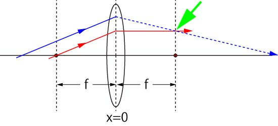
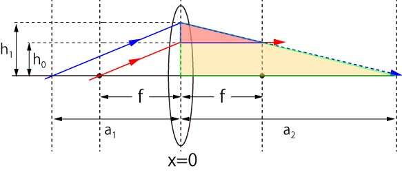
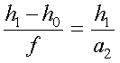
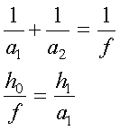
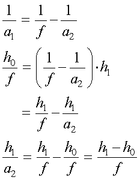

これをきちんと幾何学的に解くには，

赤い線と，青い点線との交点がX軸（レンズの中心を０）において，ちょうど焦点位置，ｆ，となればいいのです．
さて，二つの三角形に注目してみましょう．

ピンクとクリーム色です．
この二つの三角形は相似です，つまり，底辺と高さの比が同じになるはずです．

さて，この計算を解くには上の図から，次の二つの式が導き出せます．

最初の式はレンズの公式，二つ目の式はレンズの左側の三角形の合同から導き出せますね．
レンズの公式を変形して，a1，を消去しましょう．

となり，見事上の式と同じになりました．
つまり，平行光をレンズに照射すると焦点で集光する，と言うことです．
具体的なイメージは次のページに示しましょう．